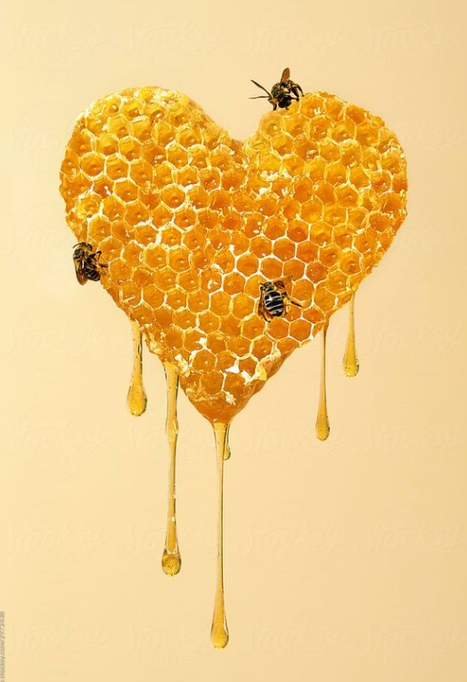

A veces, las cosas más sutiles nos dejan las más grandes enseñanzas. Hoy en Bindi investigamos sobre el funcionamiento de una colmena de abejas. Estas maravillosas criaturas, con su intrincada organización y cooperación, nos enseñan valiosas lecciones sobre la comunidad, la eficiencia y la supervivencia.
Dentro de una colmena, cada abeja tiene un papel específico y contribuye al bienestar de toda la comunidad. La abeja reina es el centro de la colmena, responsable de la reproducción y del mantenimiento del equilibrio en la colonia. Las abejas obreras, que constituyen la mayoría de la población, realizan diversas tareas como la recolección de néctar, polen y agua, la construcción y mantenimiento de los panales, la alimentación de las larvas y la defensa de la colmena. Los zánganos, por su parte, son los machos cuya función principal es la reproducción.
La comunicación en la colmena se realiza a través de una danza, conocida como la “danza de las abejas”. Esta danza transmite información sobre la ubicación de las fuentes de alimento y su calidad, permitiendo a las obreras encontrar los recursos necesarios para el sustento de la colonia. Es asombroso cómo las abejas han desarrollado un lenguaje y una forma de comunicación tan sutil.
La construcción de los panales es otro ejemplo de la sabiduría de la naturaleza en acción.
Las abejas obreras secretan cera a partir de sus glándulas y la utilizan para construir los panales hexagonales perfectamente diseñados. Esta estructura hexagonal sigue los principios de la geometría sagrada, gracias a la cual se maximiza el espacio y la eficiencia de almacenamiento de alimentos y cría. Es sorprendente cómo las abejas, sin ninguna instrucción externa, siguen instintivamente este diseño óptimo.
La colmena también se mantiene en un estado de armonía gracias a un sistema de regulación de temperatura. Las abejas obreras realizan un trabajo constante para mantener la temperatura interna dentro de un rango óptimo, tanto en invierno como en verano. Utilizan la vibración de sus músculos para generar calor o para ventilar y enfriar la colmena, asegurando así el bienestar de la comunidad.
Las abejas son polinizadoras fundamentales para la reproducción de plantas y el mantenimiento de los ecosistemas. Su actividad de polinización es crucial para la producción de alimentos y la diversidad de la flora, por lo que son fundamentales para el planeta y los seres que lo habitan.
Observar una colmena de abejas es sumergirse en un mundo de maravillas naturales y sabiduría colectiva. Estas diminutas criaturas nos enseñan la importancia de la cooperación, la comunicación, la organización y la sostenibilidad. La colmena de abejas es un recordatorio poderoso de que, cuando trabajamos juntos en armonía con la naturaleza, podemos lograr grandes cosas y preservar la belleza y el equilibrio de nuestro mundo.